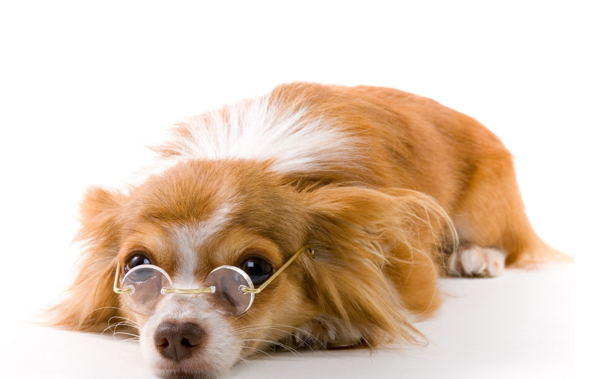

Уход за глазами
Чтобы глазки оставались чистыми, не слезились и не гноились, во-первых надо соблюдать диету и не давать питомцам сладости. Если у вашей собачки нет проблем с глазками, нет инфекций, они чистые и здоровые – то и средства для ухода вам не понадобятся.
Для удаления слез, гнойных выделений используют очищающие салфетки, обычные салфетки для человека не подойдут вашему питомцу, они могут вызвать аллергическую реакцию и нанести вред слизистой глаза.
Для ухода за проблемными глазками используют специальную пудру, которую раз в день наносят на область вокруг глаз, она предотвращает воспаления, появление темных пятен и слезливости.
Также в борьбе за чистые здоровые глазки можно использовать таблетки по рекомендации вашего ветеринара.
